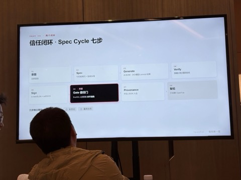
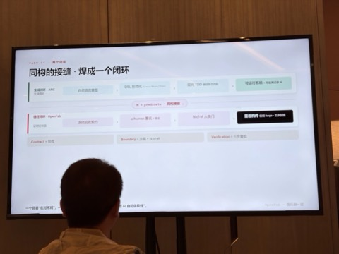

音频聚焦构建可信 AI 软件工程，介绍了传统软件供应链安全规范，分析了 AI 编程带来的新问题，提出实现可控的侧重点和构建信任闭环的方法，内容如下：
张汉东补上了全天最关键也最容易被兴奋情绪忽略的一环：供应链安全。当 AI 大规模生成代码，传统扫描器面对「AI 生成 + 仿冒签名」的攻击出现「结构性失明」。OpenFab 的主张很硬核——把传统软件的验证 / 签名 / 人类问责重新嵌入 AI 生成流程，「代码提交不可跳过人类审查」。

